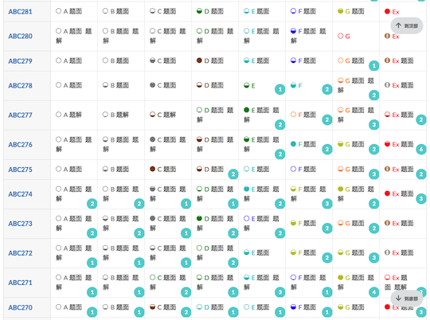
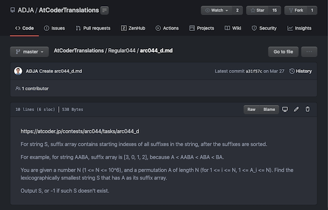
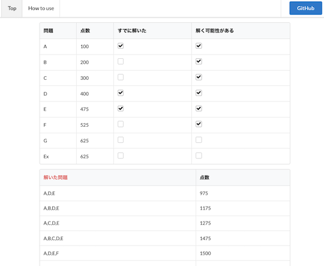
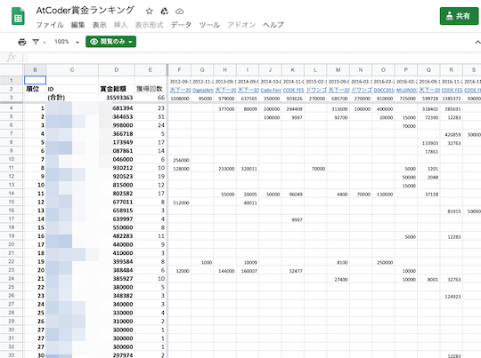
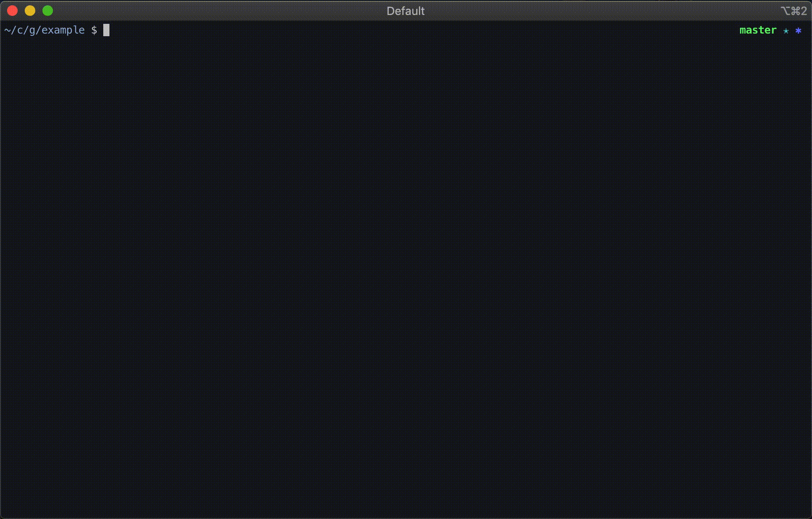
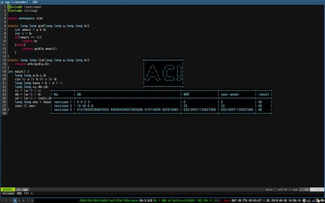
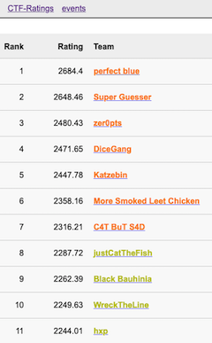

更新停止の可能性が高い
各種情報の更新が停止されたと思われるサービス・ツール、記載内容が古くなったと思われるサービス・記事・ツイートなどを掲載しています。
Webアプリ・Webサイト
問題を解く
-
Atcoder Daily Contests
- 日替わりで問題を解くことができる。AtCoderの過去問から、仮想的なAtCoder Xxx Contest (Xxx: Beginner, Regular, Grand)クラスの問題セットが出題される。
- 理由: 記載なし。

AtCoder-Review - 任意のユーザが正解(AC)した問題とその回数を表示する。
注意
検索ボタンの連打などは控える。過剰なAPIリクエストを回避するため。

多言語への対応
-
AtCoder 中文站 - 中国語ユーザ向けに、コンテストの問題文の翻訳と解説・ソースコードの一例がまとめられている。ユーザスクリプト版もある。
 -
kyopro share - 競技プログラミングのおすすめの問題を共有できる。
- 理由: 記載なし。

-
AtCoderTranslations
- 日本語で出題されているコンテストの問題を英語に翻訳している。
- 理由: 記載なし。
- 代替手段: AtCoderの言語表示を「English (EN)」にする。

問題を解くときの補助ツール
-
Rujaion
- 競技プログラミングのためのRust IDE。C++とPythonも試験的にサポートされている。サンプルのテスト、解答コードの提出、コードの補完・移動・自動整形、テンプレートの生成、グラフの構造の可視化などの機能がある。

-
Hisui
- 競技プログラミング専用のサポートツール(Alpha版)。コードエディタ(C++とPythonに対応)、ダッシュボード、解答コードのテスト・提出などの機能が用意されている。
注意
2022年6月時点で、コンテスト中の利用は非推奨。

得点状況と配点から次に解く問題を決める
-
AtCoder Strategies - ある時点の得点状況と正解の可能性がある問題の配点に基づいて、得られる点数の組み合わせ(見込み)を昇順に表示する。
注意
アルゴリズム部門の日鉄ソリューションズプログラミングコンテスト2023（AtCoder Beginner Contest 303）以降のコンテストに対応(手動)。

ヒューリスティック問題の入出力を可視化
-
ahc001-gen-vis-wasm - AtCoder Heuristic Contest 001で提供されている入力ジェネレータとビジュアライザをWebブラウザから利用することできる。ソースコードは、GitHub
で公開されている。

コンテストの成績を見る
-
AtCoder Heuristic Statistics - AtCoder Heuristic Contestのレーティング分布を表示する。
- 理由: 記載なし。
- 代替手段: AtCoderの「プロフィール」ページを見る。

-
AtCoderマラソンランキング - マラソン系コンテストの順位をAtCoder レースランキングと同じ形式でポイント化し、ランキングをつける。
- 理由: 記載なし。
- 代替手段: 調査中。

コンテストの成績に関連するサービス
-
AtCoder Prophet - 機械学習モデルを使って、将来のレーティングを予測する。

コンテストに関する統計情報
-
AtCoder Language Visualizer - 各問題の言語別提出数・割合を表示する。また、作者による使い方・技術解説に関する記事もある。

-
AtCoder QQ - コンテストの順位を、最高順位が含まれる形で表形式 (縦軸: 10の位、横軸: 1の位) で示す。また、セルをクリックすると、該当するコンテスト情報が表示される。

-
atcoder-synchronicity - 指定した2人のユーザのシンクロ率(両者のパフォーマンス値の相関係数)を表示する。

-
AtCoder Heuristic Race Ranking Unofficial - AtCoder Heuristic Contest (AHC)の順位に基づいた年別のポイントランキングを見ることができる。集計は、AtCoder レースランキングの方法に基づいている。

-
AtCoder賞金ランキング - 賞金付きコンテストの獲得額(目安)を集計している。元ツイートを参照。
- 確認した日: 2023/07/15
注意
2021年5月以降のコンテストは、反映されていない可能性が高い。

ライバルを探す・競う
-
Atcoder Beginner Contest Tournament - AtCoder Beginner Contestの順位を使ったトーナメント戦の結果を見ることができる。また、X (旧 Twitter)で最新情報の告知が行われている。

コンテスト後の情報収集・発信
-
AtCoder Friend Finder - TwitterでフォローしているAtCoderユーザを表示する。
- 理由: 記載なし。
- 代替手段: 調査中。

注意
2021年6月以降、更新が行われていない可能性がある。
Bot
問題の解答状況・記録を確認する
-

-
AtCoder Alert - 自分の解答状況を自動でツイートしてくれる。つぶやく内容をカスタマイズすることも可能。
- 確認した日: 2023/07/08
- 理由: Twitter APIの有料化に伴い、更新が停止したと思われるため。

コンテストの開催日時を確認する
-
Contests-Line-Bot
- 「コンテスト」を含む文章を送ると、コンテストの日程が通知される。AtCoderだけでなく、Codeforcesやyukicoderにも対応している。
- 確認した日: 2023/07/10
- 理由: Herokuの有料化に伴い、更新が停止したと思われるため。

-
競プロer Bot - AC(Accepted)、日単位のランキング、コンテストの予定を通知する。
- 確認した日: 2023/07/10
- 理由: Twitter APIの有料化に伴い、更新が停止したと思われるため。

-
競プロリマインダー - 毎朝8:00にコンテスト情報を通知する。Codeforces、CSAcademy、Google Code Jam、LeetCode、Topcoder、yukicoderにも対応している。
- 確認した日: 2023/07/10
- 理由: Twitter APIの有料化に伴い、更新が停止したと思われるため。

AtCoder Problemsでバーチャルコンテストに参加する
-
- 出題範囲: 登録されているバーチャルコンテストによって異なる
- 通知日時: 各コンテストの開始10〜60分前
-
- 出題範囲:
- AtCoder Beginner Contest (通称、ABC)のA〜D問題
- AtCoder Regular Contest (同ARC)のA〜C問題
- AtCoder Grand Contest (同AGC)のA〜B問題
- 開催日時:
- ABC: 平日の14:00〜14:35、21:00〜21:35
- ARC: 月曜日・水曜日・金曜日の15:00〜15:55、22:00〜22:55
- AGC: 火曜日・木曜日の15:00〜15:55、22:00〜22:55
- 主催者: buriodenさん
- 出題範囲:
コンテストの成績を見る
-
AtCoder コンテスト実況 Bot - コンテスト開催中に登録されているユーザの順位が上がったら通知する。
- 確認した日: 2023/07/10
- 理由: Twitter APIの有料化に伴い、更新が停止したと思われるため。

コンテスト後の追加テストケースの有無を確認
- AtCoder After Contest Bot - コンテスト後に追加のテストケース（例えば、after contest）がある場合に告知してくれる。
ユーザスクリプト
Webページに色付けする
-
AtCoder Difficulty Colorizer for Typical 90 - 「競プロ典型90問」の問題名を、難易度に応じた色に変更する。
- 確認した日: 2023/07/17
- 理由: atcoder-difficulty-displayに同じ機能が実装されたことを確認したため。

-
AtCoder Beautiful Code View - Monaco Editorを利用して、「提出結果」ページのコードを見やすく表示する。
- 確認した日: 2023/07/17
- 理由: AtCoder Comfortable Editorの方がより高機能であり、かつ、併用ができないため。

-
AtCoder Better Highlighter - 「提出結果」ページのコードをハイライトして見やすくする。デフォルトで10種類以上の言語をサポートしており、対応言語の拡張や配色の変更も可能。
- 確認した日: 2023/07/17
- 理由: 作者により同スクリプトの更新停止が告知されているため。

-
AtCoder Heuristic Rating coloring - AtCoder Heuristic Contestの「順位表」ページで、ユーザ名を同コンテストのレーティングに応じて色付けする。
- 確認した日: 2023/07/17
- 理由: 作者により同スクリプトの更新停止が告知されているため。

-
atcoder-tasks-dropdown-menu-colorizer - 「問題」ページのドロップダウンメニューに、atcoder-tasks-page-colorizerと同じ色付けを行う。
- 確認した日: 2025/03/08
- 理由: 該当スクリプトが前提としているComfortable Atcoderの利用が非推奨とされたため。
注意
Chrome拡張機能のComfortable Atcoderをインストールする必要がある。
-
icpc2021_teamlist - ICPC 2021チーム一覧に、ユーザ名とAtCoderのレーティングに対応した色を表示する。Webサイト版もある。

-
ICPC-Yokohama-2020-Username-and-AtCoder-Color - ICPC 2020 Yokohama Liveの順位表に、ユーザ名とAtCoderのレーティングに対応した色を表示する。

ライバルを探す・競う
-
AtCoder Fav Rating - 「アカウント」ページにお気に入りの順位・レーティング(現在・最高)・参加回数を一覧で表示するボタンを設置する。
- 確認した日: 2025/06/26
- 理由: AtCoder の仕様変更により動作が保証できず、作者が利用を非推奨としたため。

Google Chromeの拡張機能
以下の拡張機能の利用は非推奨です。これは、同拡張機能のベストプラクティスに沿っておらず、安全性が担保できないことと、まもなくサポートされなくなる可能性があるためです。
問題を解く
-
AtCoder Opener - コンテストの「トップ」ページで拡張機能のボタン(Aのマーク)をクリックすると、「印刷用問題文」と「提出」ページを新しいタブで開くことができる。
- 確認した日: 2025/03/08
-
NextPage - あるコンテストの次の回のページに移動できる。
- 確認した日: 2025/03/08
参考
拡張機能のアイコンが表示されていない場合は、ピン止めをする必要がある。青矢印のマークをクリックすると動作する。

ソースコードの提出・確認を簡単に
-
Comfortable Atcoder - 提出結果の通知、問題をドロップダウンリストで表示、などを設定できる。
- 確認した日: 2025/03/08

コンテストに参加する
-
Coder's Calendar - 開催予定のコンテスト情報を表示する。Codechef、 HackerEarth、Hackerrank、Topcoder、Codeforces、CSAcademy、 LeetCode、Kaggleなどにも対応している。
- 確認した日: 2025/03/08

-
Coding Schedule - 開催中・開催予定のコンテスト情報を表示する。Codeforces、Codechef、CSAcademy、HackerEarth、Hackerrank、Topcoder、Sphere online judge (Spoj)などにも対応している。
- 確認した日: 2025/03/08

-
KONTESTS - コンテスト情報を表示する。Codeforces、Codeforces::Gym、TopCoder、CSAcademyにも対応している。
- 確認した日: 2025/03/08

コンテストの成績を見る
-
AtCoder ACer - 「問題一覧」ページにコンテスト中にAC(Accepted)した人数を表示する。
- 確認した日: 2025/03/08

-
AtCoder VirtualContest-Connect - バーチャルコンテストの成績を利用して、コンテスト当日に得られた可能性がある順位・パフォーマンス値を表示する。
- 確認した日: 2025/03/08

Webページをより見やすく
-
AtCoder Color Mark - 「順位表」や「コンテスト成績表」のページにレーティングを示す円を表示する。
- 確認した日: 2025/03/08

-
AtCoder Color - 「問題」ページで提出状況に応じて色付けする。
- 確認した日: 2025/03/08

Visual Studio Code 拡張機能
テンプレート・テストケースを用意
-
editSampleCase
- online-judge-tools/ojのサンプルデータにテストケースを簡単に追加できるVisual Studio Codeの拡張機能。詳しい使い方は、作者の紹介記事を参照されたい。

記事
入門者・初心者向けの内容
- AtCoder Junior League 2023 - AtCoderの特設ページ。
- 中高生向け学校対抗競技プログラミング「AtCoder Junior League 2025 Summer」 - 学校対抗の長期コンテストリーグ（4月〜9月）の開催案内。
- 中高生向け 学校対抗競技プログラミング「AtCoder Junior League 2024 Summer」入賞校・入賞者を発表 - 入賞校・入賞者が公表されている。
- 中高生、学校対抗競技プログラミングコンテスト5-12月 - リセマム（ReseMom）による紹介記事。
- AtCoder Junior League 2023 ランキング上位校の強さの秘密に迫る（第1回：筑波大学附属駒場中・高等学校） - chokudaiさんとkaede2020さんがAJL上位校の中高生を訪問し、AJLや競技プログラミングへの取り組み方を紹介している記事。
- 中高生向け 学校対抗競技プログラミング「AtCoder Junior League2023」入賞校・入賞者を発表 - AJL2023の学校・個人ランキングなどが集計・公表されている。
- 日本最大のプログラミングコンテストサイト AtCoder 全世界での登録者数が30万人を突破！ - AtCoderの登録者数が2021年6月に30万人を突破したことを報告した記事。競技プログラミングの関連書籍や無料のオンライン学習コンテンツも紹介されている。
コードを書くための環境構築を行う
任意のOS
- 競技プログラミングの環境を VSCode devcontainer で作成する - 複数の言語の実行環境を構築する方法と設定例(C++、Go、Python)が紹介されている記事。
- ganyariya/competitive
- C++、C#、Go、Python、Luaの設定例がGitHubで公開されている。
- ganyariya/competitive
Macintosh
-
Visual studio codeで競プロ環境構築[mac OS] - 動作環境は、macOS Mojave。C++(GCC)のコンパイル・実行環境をVisual Studio Codeと、拡張機能を使って構築する方法が紹介されている。便利な標準ライブラリ(bits/std++.h)を使用することができる。
-
AtCoder用にVSCodeを用いたRustの開発環境の構築をした話 - 動作環境は、macOS Big Sur。Rustのコンパイル・実行環境をVisual Studio Codeと拡張機能を利用して構築する方法が詳しく紹介されている記事。
Windows
-
WSL2とVSCodeでC++環境構築した（AtCoder Libraryを使えるようになるまで） - C++やRustのコンパイル・実行環境をVisual Studio CodeとWindows Subsystem for Linuxで構築するための記事。設定ファイルやAtCoder Libraryに関する説明もある。
-
Dockerを使って競技プログラミング用環境を構築 - C++とPythonの実行環境の構築方法を説明した記事。各種設定やAtCoder Libraryの導入方法なども記載されている。
-
Visual Studio Codeで競プロ環境構築(導入編) - C++(GCC)のコンパイル・実行環境をVisual Studio CodeとWindows Subsystem for Linuxで構築する方法が丁寧に解説されている。
- Visual Studio Codeで競プロ環境構築(実践編) - 便利なショートカット、コードスニペット、拡張機能、サンプルケースの自動検証、デバッグツールについて紹介されている。
-
【VScode＋WSLで始める】競プロ用C++デバッグ環境構築 - C++のコンパイル・実行環境をVisual Studio CodeとWindows Subsystem for Linuxで構築したあとの拡張機能の導入・設定ファイルについて紹介されている。
-
Windowsで競プロに必要なNeovim環境を整える - カスタマイズ性の高いエディタの一つであるNeoVimを利用して、C++(clang)のコンパイル・実行環境を構築するための記事。関連ツールの導入方法や設定ファイル・プラグインのおすすめ情報も紹介されている。
実行環境のテンプレート・サンプル
-
at-coder-with-php
- PHPの実行環境を構築することができる。
-
atcoder-rs
- Rustのテンプレートプロジェクト。
- AtCoder with Rust in mac
- cargo-atcoderを使用して、Mac OSでRustの実行環境を構築することができる。
コンテストに向けた練習方法を知る
-
AtCoder問題カテゴリー分類 - コンテストで出題された問題が分類されている。難易度の高い問題が多く含まれている。
- 確認した日: 2023/07/13
注意
2021年10月以降の更新は確認できず。
-
AtCoder Typical Components (β) - AtCoder Beginner Contest 301以降を対象として、問題と典型要素を双方向に関連付けた一覧表。各問題の典型要素と、各典型要素を含む問題の表がそれぞれ用意されている。
- 確認した日: 2023/06/05
注意
2024年5月以降の更新は確認できず。
競技プログラミングと生成AIとの関係
- 大実験！ChatGPTは競プロの問題を解けるのか (2024年5月版) - 筆者がオリジナルの問題を作成し、GPT-4oの回答性能を実験・調査している。
- 競技プログラミングとChatGPTを含むAIについて - ChatGPTの公開に伴い、AtCoder社長のchokudaiさんが個人的な見解を述べた記事。AIの実力、競技性や教育への影響、コンテストでの使用の是非などについて言及されている。
- ChatGPTに競技プログラミングさせてみた【AtCoder】 - ChatGPTを利用して、AtCoderで出題された問題を解いている記事。
- GPT-4は青色コーダーの夢を見るか - GPT-4を利用して、AtCoderの過去問をどこまで解けるか調査した記事。AIで解くのが難しい問題の種類や競技プログラミングにおける活用の方向性についても言及されている。
- ChatGPT3.5&4.0で競技プログラミングAtCoderの問題のスキル推定を検証しました - AtCoder Beginners Contest (通称ABC)のA〜C問題を対象として、解くために必要なスキルを推定・検証している記事。
実装テクニックを学ぶ
C++
-
競技プログラミングとC++のアレコレ - 競技プログラミングで使われる記法(と業務プログラミングとの違い)を紹介した記事。
注意
2018年7月末時点の情報のため、ジャッジシステムの実行環境および言語仕様の確認を推奨。
Python
- 【AtCoder】チートシート公開(コメント解説付き)【競技プログラミング】 - 別の著者による頻出コードのチートシート。コメントでとても丁寧に解説されているのが特徴。
- Python3で競技プログラミングする時に知っておきたいtips（入力編） - Python利用者に向けて、初心者がつまづきがちなデータの入力方法を詳細に解説した記事。
- 競プロ界隈でpython強者がやっていることをまとめてみた - Python利用者に向けて、入出力や上位陣が利用している便利なコード集をまとめた記事。
-
PythonでMultisetっぽいことをする(heapqを用いた実装) - Pythonで、C++の
Multisetに相当する機能の実装方法を紹介した記事。注意
擬似
Multisetでの二分探索はできない。
Rust
-
Rustで競技プログラミングの入力をスッキリ記述するマクロ - Rustで入力データを扱うコードを簡潔に書くためのinput!マクロが紹介されている記事。
- 理由: 言語アップデートに伴い、文法・言語仕様が変更されたため。
- 代替手段: AtCoder言語アップデートでRustの入出力が楽になっていたや言語アップデートで追加されたライブラリ一覧を読む。
コンテストに関する統計情報を見る
2023年
-
AtCoder Junior League 2023 - 学校ランキング - 中学・高校部門のそれぞれ上位20校のランキング。2023年5月15日時点(修正版)。
-
AJL 高校部門上位40校 (2023年9月11日時点) - 高校部門の上位40校を対象として、各ユーザのコンテスト別獲得スコアが集計されている。中学部門の上位40校や個人部門もある。
動画
AtCoder公式チャンネル
VTuber (バーチャルYouTuber)
- kurenaif - kurenaifさんのチャンネル。競技プログラミングの初心者に対して、コーチングを行いながら考察を進める過程を紹介した動画が公開されている。
- 糟屋もふ - KasuyaMofuさんのチャンネル。C++入門 AtCoder Programming Guide for beginners (APG4b)を解く動画などが公開されている。
- 理由: 競技プログラミングに関連する動画が削除されているのを確認したため。
- 蟹江もなみ - kanipanunuさんのチャンネル。コンテストの過去問を解く動画が公開されている。
- きりみんちゃん kirimin-chan - kiriminさんのチャンネル。競技プログラミングやライブコーディングだけでなく、幅広い話題の動画が公開されている。
- 紅童ゆに - 紅童ゆにさんのチャンネル。
- 理由: 競技プログラミングに関連する動画が削除されているのを確認したため。
- 高井茅乃と毒芽えるのバ美nIQ - takaichinoさんのチャンネル。コンテストの過去問を解いたり、反省会をしたりしている。
- 西園寺まこ - saion_macoさんのチャンネル。コンテストの過去問を解く動画などが公開されている。
- 浜ぬる - hamanuruさんのチャンネル。コンテストの過去問を解く動画が公開されている。
- 文月このは - kono_julyさんのチャンネル。コンテストの過去問を解く動画などが公開されている。
- 宮乃やみ - MiyanoYami - miyanoyamiさんのチャンネル。コンテストの過去問を解く動画などが公開されている。
- めいどさん MayDoSom - MayDoSomさんのチャンネル。コンテストの過去問を解く動画などが公開されている。
YouTuber
- Rute _ - Ruteさんのチャンネル。コンテストの振り返りに関する配信が行われている。
- skyaozora58 - レッドコーダーのsky58さんのチャンネル。コンテスト当日のスクリーンキャプチャが多く公開されている。
- Tozan Southerpacks Redcoder レッドコーダー - レッドコーダーのtozangezanさんのチャンネル。アルゴリズムやコンテスト後の解説が英語で行われている。
- Yoshitaka Tomiyama - Johannさんのチャンネル。アルゴリズムやコンテストの過去問を題材とした勉強会の動画が公開されている。
- ことり兄貴【プログラマ】 - KotoriAnikiさんのチャンネル。コンテストの過去問を解く動画などが公開されている。
- じょえチャンネル - xuzijian629さんのチャンネル。斬新な企画が数多く公開されている。
- そまのすけ - somanosukeさんのチャンネル。コンテストの振り返りや過去問を解く動画が公開されている。
- てぃーい企画 - Yazatenさんのチャンネル。競技プログラミングの話題を含む大喜利が行われており、投稿者の回答が紹介されている。
ゆっくり動画
- あずぱん動画 - azmさんのチャンネル。AtCoderの始め方や過去問に関する「ゆっくり動画」が公開されている。
- みちらから - michirakaraさんのチャンネル。コンテストで出題された問題の解説とPythonでの実装方法が紹介されている。
ライブラリ・スニペット
C++
- AokabiC/compro-lib
- AokabiCさんのライブラリ。
- drafear/competitive-library
- drafearさんのライブラリ。
- fumiphys/programming_contest
- fumiphysさんのライブラリ。
- hamko/procon
- hamkoさんのライブラリ。問題の典型的な要素を可視化する試みが行われている。
- kazunetakahashi/library
- kazunetakahashiさんのライブラリ。
- kmyk/competitive-programming-library
- kimiyukiさんのライブラリ。
- KryKsk/Algorithm
- C++で実装されたアルゴリズムのライブラリ。
- kumaraditya1999/Algorithms
- kumaraditya1999さんのライブラリ。
- morioprog/cpplib
- morio__さんのライブラリ。
- ngtkana/ngtlibcpp
- ngtkanaさんのライブラリ。Rust版もある。
- primenumber/ProconLib
- primenumberさんのライブラリ。
- rsk0315/library
- rsk0315さんのライブラリ。Rust版もある。
- satanic0258/library
- satanic0258さんのライブラリ。
- square1001/algorithm-contest-library
- square1001さんのライブラリ。
- tubuann/library
- tubuannさんのライブラリ。
- xuzijian629/library2
- xuzijian629さんのライブラリ
コマンドラインツール
ソースコードにバグがないか確認
任意の言語
- acc
- テスト、提出ができる。提出する言語は、オプションで新旧システムのいずれかを選択できる。
-
WrongAnswer
- 指定した問題のテストケースをダウンロードする。利用には、前述のOnline Judge Toolsが必須。使い方が日本語・英語で説明されている。

-
AtCoderSupporter
- サンプルケースのテストと提出ができる。
複数の言語
- atsubmit
- サンプルの取得・テスト、提出、結果の閲覧を自動で行うことができる。テストケースの正誤判定は、HaskellとRustが可能。
-
getac
- サンプルのテストを実行できる。対応言語は、C、C++、Clojure、Common Lisp、Go、Haskell、Java、Node.js、Python、Ruby、Scheme。
 -
Procon Tools
- 競技プログラミングサイトに参加する上で必要な機能を提供しているVisual Studio Codeの拡張機能。C++とGoに対応している。
C++
- procon.vim
- Neovimプラグイン。
-
vim-atcoder
- Vimでサンプルケースのテストするためのプラグイン。企業コンテストには、今後対応予定。

Python
利用するときは、Goの実行環境が必要。
- atc
- 軽量のテストツール。
テンプレートを生成
ヒューリスティック部門
- kmyk/marathon-kit
- AtCoder Heuristic Contestのためのテンプレートレポジトリ。テストの並列実行、途中経過のビジュアライズ、GitHubでの自動テストが実行できる。
関連コンテストサイト
Codeforces
-
Codeforces Tool
- サンプルの入出力の取得、テスト、解答コードの提出などができるCLIツール。

-
Hightail
- サンプルの入出力を取得し、ローカル環境でテストするGUIツール。

情報オリンピック
-
AtCoderにJOIの過去問の移植作業を行う有志を募集するツイート - AtCoderでJOIの過去問を解くことができるように、2022年度以降の移植作業を引き継ぐ方を募集しているツイート。
- 理由: 記載なし。
-
JOI夏季セミナーに代わる輪読会の開催について - JOI夏季セミナー(ハイレベルコース)の開催見送りに伴い、代替イベントとなる輪読会の参加者を募集している記事。
Topcoder
Topcoder Arena（applet版・Web版）の提供終了とともに、コンテストの開催が一時的に休止されるためです(出典)。
-
How To Compete in SRMs - Single Round Match (SRM) に登録・参加するための方法を説明した公式サイトのページ。
- 確認した日: 2024/07/14
-
TopCoderをはじめよう！(2021年版) Python/C++対応版 - Single Round Match (SRM)に参加するために必要な環境構築の方法と基本操作を日本語で解説した記事。注意事項が丁寧に解説されているのが特徴。
- 確認した日: 2024/07/14
-
Topcoder Marathon Matchの始め方（最新版） - Marathon Match (MM)の始め方を日本語で解説した記事。アカウント登録から環境構築、サンプルコードの動作確認、回答の作成、提出および結果の確認方法まで丁寧に紹介されている。
- 確認した日: 2025/05/05
-
Greed
- 問題を解くときに、普段使っているエディタを使えるようにするためのJava Arenaプラグイン。入出力フォーマットに沿ったテンプレートコードの生成やサンプルのテストができる。対応言語は、C++、C#、Java、Python。また、環境構築の方法を日本語で解説した記事(Java Appletの導入、Greedの設定)もある。

注意
近年は更新頻度がかなり低下しており、最新の環境に対応していない可能性もある。
数学系コンテスト
-
とある数学の凡人 - 日本数学オリンピックの解説動画が多数公開されているYouTubeのチャンネル。最新情報は、Twitterで確認できる。
- 確認した日: 2025/05/28
- 理由: 記載なし。
-
Beginners Math Contest - 初心者向けの競技数学コンテストが開催されている。
- 確認した日: 2023/06/22
- 理由: 記載なし。
-
Math Olympiad Rating Project - 数学オリンピックの過去問を利用したコンテスト(が定期的に開催される予定)。この結果を用いて、問題の難易度を推定したデータベース「Math Olympiad problems」を作成することが最終目標として掲げられている。
- 確認した日: 2023/06/22
- 理由: 記載なし。
セキュリティ系コンテスト
-
CTF-Ratings - CTF(Capture The Flag)のレーティングシステム。レーティングとパフォーマンスは、AtCoderに準拠している。
- 確認した日: 2023/07/31
- 理由: 記載なし。
